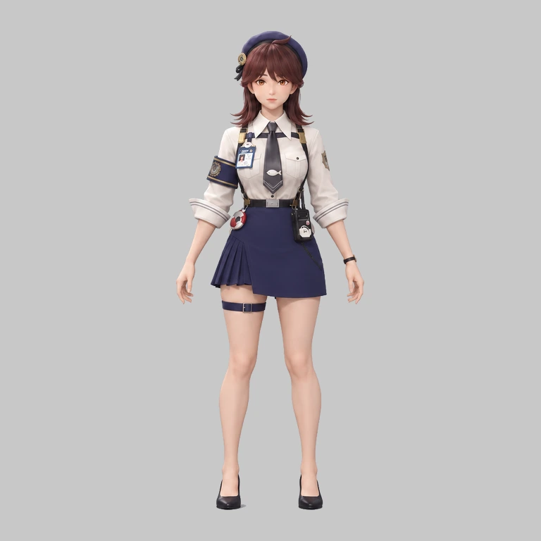
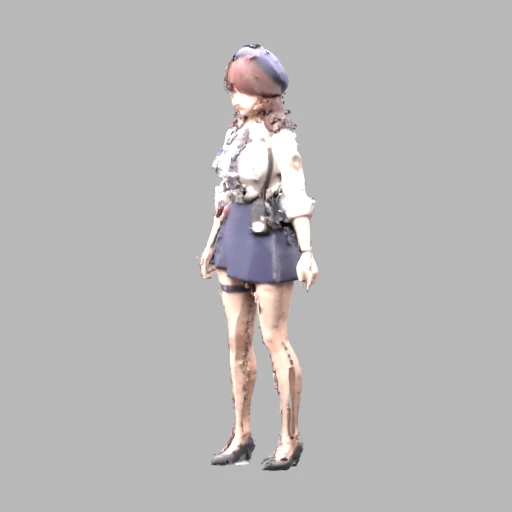
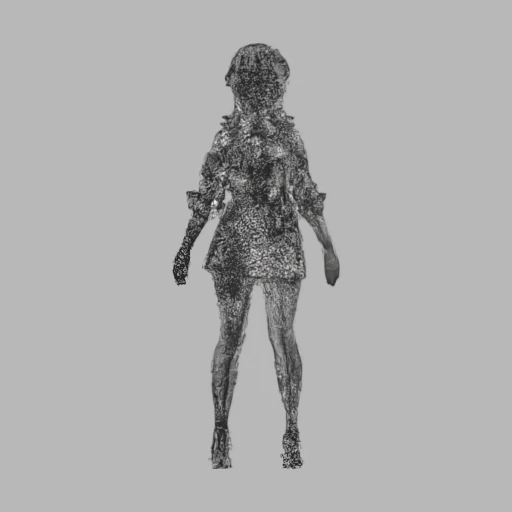

雨之城 · 360° 角色重建
从一张角色正面图生成 360° 环绕，再重建可换角度观察的高斯模型，并抽取三角网格。
 放大查看 ↗
放大查看 ↗高斯重建的环绕效果
以《雨之城》Sayuki 的造型为参考，测试单张正面设定图能重建出多少角色细节。高斯模型保住了贝雷帽、制服层次、双腿和鞋的整体轮廓。
用一张图生成多视角
先裁掉输入图的边框和标注，分出人物前景，再在 ComfyUI 用 MiniMax-H3 和 360-Orbit LoRA 生成环绕。首尾使用同一张图，视频输出 73 帧，分辨率为 768 × 768。侧面和背面的服装细节来自模型推断。

放大查看 ↗解算相机，再训练高斯
对视频抽帧后，为 COLMAP 生成独立的前景特征遮罩，减少背景对特征匹配的干扰。COLMAP 注册了全部 73 帧，解得约 354° 的方位覆盖，平均重投影误差约 0.74 像素。
用求解出的相机位姿和前景图训练 MILo，做了 18,000 步高斯优化，并在训练中加入网格约束。上方视频来自这次训练的检查点，可以对照 AI 视频观察转到背面时的轮廓和衣服细节。
抽取网格并检查细节
从可学习的有符号距离场（SDF）提取三角网格，再用多视角轮廓过滤帽顶和脚下的残片。用 Blender 清理和减面，最后导出保留顶点颜色的 GLB。
输入视角集中在同一高度，手指、头顶和鞋底缺少充分的观察。提取的网格仍有粗糙表面和局部孔洞，骨骼绑定前需要手工修整。

放大查看 ↗
放大查看 ↗